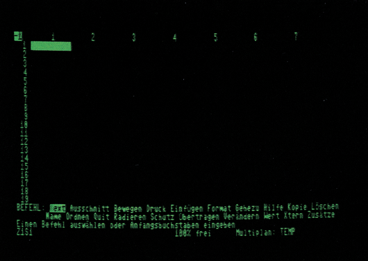
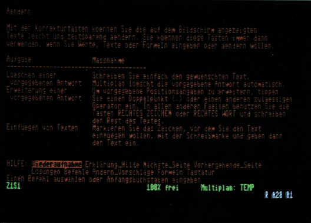
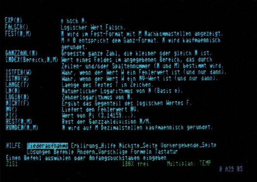

Multiplan
Multiplan - das ist ein Kalkulationsprogramm, das auf dem Commodore 128 mit dem Betriebssystem CP/M läuft. Wir zeigen Ihnen, wie es sich mit diesem Programm arbeiten läßt.
Tabellenkalkulationen sind Programme, die es dem Anwender ermöglichen, seine Berechnungen vom Papier in den Computer zu verlegen. Es stellt dem Anwender den Rahmen zur Verfügung, der zum Erstellen eines »Arbeitsblattes« (englisch als »spreadsheet« bezeichnet) benötigt wird. Durch dieses offene Konzept läßt sich die Anwendung nicht auf ein bestimmtes Gebiet beschränken. Der Aufbau eines Spreadsheets gliedert sich in Spalten und Zeilen. Jeweils ein Feld daraus kann einen festen Wert, einen Text oder eine Formel enthalten. Dabei können Werte und Formeln beliebig untereinander verknüpft werden. Alle Ausgaben können formatiert werden. Was aber ist Multiplan und wozu braucht man es? Multiplan soll dem Anwender den Papierkram ersetzen, der zwangsläufig anfällt, wenn mehr oder weniger umfangreiche Kalkulationen durchgeführt werden sollen. Da das ganze im Computer stattfindet, können Berechnungen oder Änderungen sofort durchgeführt werden, und ihre Auswirkungen sind sofort sichtbar. Darin liegt der große Vorteil von Multiplan: Man kann mit den Werten experimentieren (lassen), bis das errechenbare Optimum gefunden ist. Zu diesem Zweck stellt das Programm neben allen mathematischen Rechenarten auch logische Verknüpfungen und statistische Operationen zur Verfügung. Ebenfalls enthalten sind Iterationen, die schrittweise Annäherung an eine Lösung. Dazu ein Beispiel: Ein Vertreter erhält 10% des Nettogewinns als Erfolgsprämie ausgezahlt. Angenommen, es werden 1000 Mark als Bruttogewinn, also ohne Abzug der Prämie erwirtschaftet. Das Problem dabei ist, daß die 10% vom Bruttogewinn einfach 100 Mark wären; dann hätte man aber 900 Mark Nettogewinn. Vom Nettogewinn jedoch sollte die Prämie berechnet werden. Also 90 Mark? Nein, dann wären wir bei 910 Mark Nettogewinn. Sie merken schon, wo das hinführt. Man muß ein paarmal im Kreis herum rechnen, bis das Ergebnis hinreichend genau ist (Das Ergebnis ist genau 1000/11; eine periodische Dezimalzahl.). Derartige Berechnungen fallen in den Bereich der Iterationen, die Multiplan für den Anwender übernimmt. Natürlich ist das ein Minimalbeispiel. Multiplan vearbeitet auch größere und dementsprechend komplexer aufgebaute Berechnungen. Damit man den Überblick nicht verliert, können zur Übersicht und zur Benutzerführung Texte in das Arbeitsblatt eingebunden werden, oder Tabellen nach bestimmten Kriterien sortiert werden. Auf einem Drucker ausgegeben sieht das Ganze dann übersichtlich und entsprechend professionell aus. Um Ihnen einen Überblick zu ermöglichen, haben wir in der Tabelle 1 die Befehlsmenüs und die Funktionen von Multiplan zusammengestellt.
Tips zu Multiplan
Das Programm ist auf zwei Disketten im 1541-Format enthalten, damit auch die Besitzer einer 1570/1571 dieses Programm nutzen können. Vor dem ersten Gebrauch erstellt man sich nach Anleitung eine Arbeitsdiskette im eigenen Diskettenformat. (Von der Verwendung der 1541 ist dabei abzusehen, da die Nachladezeiten sonst sehr lang sind). Das Kopieren dauert zwar recht lange, und danach weiß man was ein Discjockey leisten muß, doch dann kann man die Originaldisketten getrost an einen sicheren Ort weglegen.
Eines der Dienstprogramme auf der Diskette nennt sich »INSTALL«, und sollte vom Anfänger gemieden werden. »INSTALL« ist ein Programm, mit dem man verschiedene Grundeinstellungen verändern kann. Multiplan muß vom Anwender nicht behandelt werden - vor allem nicht, wenn man zum ersten Mal mit Multiplan auf dem C 128 arbeitet. Sonst kann es vorkommen, daß Sie auf Ihrem 80-Zeichen-Monitor nur ein 40 Zeichen breites Arbeitsblatt sehen oder Ihre Tastatur mit seltsamen Steuerzeichen belegt ist, etc. Eventuelle Änderungen sollte man erst mit wachsender Erfahrung auf einer Testdiskette anbringen.
Hat man seine Arbeitsdiskette erstellt, dann betätigt man den Reset-Taster des C 128 bei eingelegter Diskette und aktiviertem 80-Zeichen-Bildschirm. Nach dem Booten des CP/M-Systems sollte man, wenn möglich den (Farb-)Monitor auf »grün« umschalten. Durch die Tastenkombination »CONTROL 6« stellen Sie die grüne Schriftfarbe ein. Dann wählt man über »SETUP« und nachfolgendem »G« den deutschen Zeichensatz mit entsprechender Tastaturbelegung. Die Druckeranfrage beantwortet man seinem Drucker entsprechend. Die möglichen Drucker reichen dabei vom Commodore-Drucker (seriell) bis zu Druckern mit Centronics-Schnittstelle (über den User Port). Erst jetzt laden Sie (endlich!) Multiplan mit »MP«. So, und jetzt wäre es am besten, wenn man das Laufwerk versiegeln könnte. Würde man bei laufendem Programm die Diskette wechseln, dann stürzt Multiplan hoffnungslos ab. Die Diskette darf nur nach einer Aufforderung durch das Programm gewechselt werden!
Ihr Bildschirm würde jetzt wie in Bild 1 aussehen. Das ist das leere Arbeitsblatt. Zu diesem Zeitpunkt sollten Sie sich einmal mit dem Cursor vertraut machen. Die Möglichkeiten aller Cursorbewegungen auf dem C 128 sind in Tabelle 2 aufgeführt. Leider verfügt Multiplan weder über eine Tasten-Wiederhol-Funktion noch über einen Tastaturpuffer. Der Computer nimmt die nächste Taste erst dann an, wenn er sich bis zur nächsten Eingabe durchgearbeitet hat. Dadurch wird das flüssige Arbeiten bei höherer Schreibgeschwindigkeit leider etwas gehemmt. Größere Distanzen auf dem Bildschirm sollten mit »Gehezu« überwunden werden.
| Feldzeiger (das invertierte Feld links oben): | |
|---|---|
| Einzelschritte mit den oberen Cursortasten, oder: | |
| hoch: | ^E |
| runter: | ^X |
| links: | ^S |
| rechts | ^D |
| Seitenweise blättern: vor der Cursorbewegung | ^R |
| eingeben. | |
| Feldzeiger auf das erste belegte Feld (Home): | ^Q |
| Feldzeiger auf das letzte belegte oder formatierte Feld: | ^Z |
| Feldzeiger auf das nächste belegte Feld: | ^J |
| Befehlszeiger (das invertierte Feld in der Befehlszeile unten): | |
| vor: | Leertaste |
| zurück: | DEL-Taste |
| es ist jedoch einfacher jeden Befehl durch Eingabe seines Anfangsbuchstabens zu aktivieren. | |
| Bewegen der Schreibmarke im Befehlsmenü | TAB |
| Bewegen des Cursors im Menü »Verändern« (eines Textes oder einer Formel): | |
| links | ^K |
| rechts | ^L |
| wortweise | |
| links | ^O |
| rechts | ^P |
| Zeilenende | TAB |
| Zurück ins Hauptmenü (zum Beispiel bei Anwahl eines falschen Menüs) | ESC oder RUN/STOP |
| Arbeitsblatt löschen: | Gut versteckt im Menü »Übertragen«,»Bildschirmlöschen« |
Anmerkung: »^« bedeutet, daß die nachfolgende Taste zusammen mit CONTROL gedrückt wird.

Wenn man mit Multiplan ein wenig experimentiert hat (zum Beispiel nach der Anleitung im Handbuch), wird man feststellen, daß die Suche nach der Bedeutung oder Syntax einzelner Befehle im Handbuch recht lästig sein kann. Aus diesem Grund enthält Multiplan ein Hilfs-File (Bild 2). In der Befehlszeile wird es durch Anwählen von »Hilfe« aktiviert - doch das allein wäre nichts besonderes. Befindet man sich bei Multiplan irgendwo in einem Menü (außer bei der Texteingabe), wird durch Tastendruck auf das Fragezeichen der dem Menüpunkt entsprechende Hilfstext auf dem Bildschirm dargestellt (Bild 3). Wenn die Eingabe einer Position verlangt wird (Abfrage »Felder:«) muß man nicht unbedingt Zeile und Spalte eingeben, man kann den Feldzeiger dazu benutzen. Multiplan setzt dann selbständig die richtigen Koordinaten relativ zum Ausgangspunkt ein. Die relative Angabe kann dann mittels <Control G> oder »§« in eine absolute umgewandelt werden. Weitere Tips sind im Handbuch beschrieben, man sollte sich die einmal ansehen.


Für wen ist Multiplan ?
Bereits beim Öffnen der Verpackung fällt das umfangreiche Handbuch zu Multiplan auf. Es dient nicht nur der Unterstützung des Anwenders, anhand des Handbuches lernt man mit Multiplan umzugehen. Englischkenntnisse sind dazu nicht nötig, das Programm und die Beschreibung sind ausschließlich in deutsch gehalten. Multiplan auf dem C 128 erlaubt auch einem noch nicht so tief in das Computergeschehen vorgedrungenen Anwender sich schnell in die einfachen Befehle und unkomplizierten Menüs einzuarbeiten. Die professionelle Anwendung des C 128 wird von Multiplan vollständig unterstützt. Die träge Tastaturabarbeitung wird meist nur vom Schreibmaschinenprofi als störend empfunden, und wird von der Vielseitigkeit des Programms mehr als ausgeglichen. Die Nachladezeiten der Menüs sind bei der 1570/1571 durchaus erträglich, von der Verwendung einer 1541 ist abzusehen. Multiplan kann natürlich auch zwei Laufwerke bedienen. Man kann somit Programm- und Datendiskette voneinander trennen. Die etwa 14 KByte freier Arbeitsspeicher sind der Tribut an CP/M, das nach wie vor fast den halben Speicher des C 128 belegt. Für normal große Berechnungen wie zum Beispiel Umsatzplanung und -analyse, Produktionsplanung oder der Auswertung von Wettkämpfen ist das ausreichend.
(og)Befehle und Funktionen von Multiplan
AUSSCHNITT ermöglicht die gleichzeitige Betrachtung verschiedener Bereiche einer Tabelle auf dem Bildschirm.
AUSSCHNITT TEILEN teilt den Bildschirm in bis zu acht »Fenster« auf.
AUSSCHNITT TEILEN WAAGRECHT AUSSCHNITT TEILEN SENKRECHT AUSSCHNITT TEILEN BEZEICHNUNG waagrecht und senkrecht für Zeilen- und Spaltenüberschriften. Die Grenze der Teilfenster ist jeweils durch Feldadressen oder Cursor-Positionierung anzugeben.
AUSSCHNITT UMRAHMUNG erlaubt die Einrahmung und damit die optische Hervorhebung eines oder mehrerer Bildfenster. AUSSCHNITT LÖSCHEN macht die Teilung des Bildschirmes rückgängig (einzeln pro Fenster).
AUSSCHNITT VERBINDEN synchronisiert zwei oder mehrere Bildfenster.
BEWEGEN verschiebt Zeilen oder Spalten an eine andere Stelle in der Tabelle. BEWEGEN ZEILEN verschiebt eine oder mehrere Zeilen an eine andere Stelle in der Tabelle.
BEWEGEN SPALTEN verschiebt eine oder mehrere Spalten an eine andere Stelle in der Tabelle.
DRUCK steuert die Ausgabe einer Tabelle auf einen Drucker oder auf eine Ausgabedatei.
DRUCK DRUCKER startet die Ausgabe auf einen Drucker. DRUCK PLATTE/DISKETTE startet die Ausgabe in eine Ausgabedatei (zum Beispiel ASCII-kompatibel).
DRUCK RANDBEGRENZUNG setzt die Druckformatierung.
LINKS linker Rand (Anzahl Zeichen)
OBEN oberer Rand (Anzahl Zeilen)
DRUCKBREITE (Zeichen/Zeile)
DRUCKLÄNGE (Zeilen/Seite)
SEITENLÄNGE (Zeilen/Seite)
DRUCK OPTIONEN setzt einige Druckoptionen.
BEREICH legt den Bereich der Tabelle fest, der gedruckt werden soll.
STEUERZEICHEN erlaubt die Eingabe von Steuerzeichen für die Druckeranpassung, zum Beispiel für spezielle Schriftarten oder Schriftbilder.
FORMELN erlaubt das Ausdrucken aller Rechenformeln einer Tabelle.
Z/S-NUMMERN erlaubt das Drucken der Tabellen mit den Zeilen- und Spaltennummern.
EINFÜGEN fügt Zeilen oder Spalten ein. EINFÜGEN ZEILE fügt eine festzulegende Anzahl von Zeilen in eine Tabelle ein. Wahlweise kann die Einfügung auf einen bestimmten Spaltenbereich begrenzt werden.
EINFÜGEN SPALTE fügt eine festzulegende Anzahl von Spalten in eine Tabelle ein. Wahlweise kann die Einfügung auf einen gewünschten Zeilenbereich begrenzt werden.
FORMAT formatiert Felder und/oder deren Inhalt.
FORMAT FELDER formatiert die angegebenen Felder.
AUSRICHTUNG Ausrichtung des Feldinhalts im Feld.
Stnd Standard: Ausrichtung wie im FORMAT STANDARD-Kommando (siehe dort).
Mitte positioniert den Feldinhalt in die Mitte des Feldes.
Norm positioniert Text linksbündig und Zahlenwerte rechtsbündig. Dies ist zugleich das von Multiplan vorab eingestellte STANDARD FORMAT.
Links positioniert jeden Feldinhalt linksbündig.
Rechts positioniert den Feldinhalt rechtsbündig.
FORMATCODE formatiert den Feldinhalt.
Stnd Standardformatierung wie im STANDARD-Kommando spezifiziert (siehe dort).
Zusamm (zusammen) gestattet das Fortschreiben eines langen Textes über die Feldgrenze hinweg in die benachbarten Felder.
E__form Exponentenschreibweise. Zahlenwerte werden als Potenz von 10 dargestellt.
Fest Festkommadarstellung. Die Anzahl der Dezimalstellen wird im Feld: »Dez-Stellen« festgelegt.
Norm zeigt Zahlenwerte in der für die jeweilige Zahl sinnvollsten Formatierung. Dies ist gleichzeitig das von Multiplan vorab gewählte STANDARD-Format.
Ganz zeigt nur den ganzzahligen, gerundeten Teil eines Wertes.
DM zeigt Zahlenwerte mit einem DM-Zeichen unmittelbar nach dem Betrag. Negative Werte werden in Klammern gesetzt.
* Balkengrafik: setzt Zahlenwerte in eine dem Wert proportionale Anzahl Sterne um. % Prozent: multipliziert einen Zahlenwert mit 100 und setzt ein %-Zeichen hinter die Zahl. - Keine Formatänderung
FORMAT STANDARD setzt das »Standard«-Format fest. Die mit diesem Befehl gewählte Formatierung wird später von Multiplan immer dann verwendet, wenn keine andere Formatierung ausdrücklich verlangt wird. FORMAT STANDARD FELDER setzt das Standardformat für den Feldinhalt. Alle unter »Ausrichtung« und »Formatcode« oben aufgeführten Möglichkeiten der Formatierung können als Standard festgelegt werden.
FORMAT STANDARD BREITE__DER__SPALTEN setzt den Standardwert für die Länge aller Felder. Ursprünglich ist die Länge von Multiplan mit 10 Zeichen pro Feld festgelegt.
FORMAT OPTIONEN erlaubt die wahlweise Darstellung der Felder:
Tausenderpunkte nach jeweils drei Zahlenwerten
Formeln: mit den eingegebenen Formeln statt deren Werten. Text wird in Anführungszeichen gesetzt. Eingegebene Zahlenwerte werden unverändert gezeigt. Bei Darstellung der Formeln wird die Länge aller Felder automatisch verdoppelt.
FORMAT__BREITE__DER__SPALTE legt die Länge aller Felder fest, die von der Standardlänge abweichen sollen. Die Feldlänge kann minimal drei Zeichen und maximal 31 Zeichen betragen.
GEHEZU setzt den Cursor direkt in das gewünschte Feld. GEHEZU NAME setzt den Cursor in das mit Namen genannte Feld. Wenn mehrere Felder denselben Namen führen, wird der Cursor in das erste Feld mit diesem Namen gesetzt, das heißt nach »links oben«. GEHEZU ZEILE__SPALTE setzt den Cursor in das mit Zeilen- und Spaltennummer angegebene Feld.
GEHEZU AUSSCHNITT setzt den Cursor in einen anderen Bildausschnitt und in diesem in das mit Zeilen- und Spaltennummer angegebene Feld.
HILFE ruft Erklärungen zu allen Multiplan-Befehlen und -Funktionen auf. Zusätzlich wird eine Zeile mit typischen Anwendungsproblemen und deren Lösung gezeigt.
KOPIE kopiert den Inhalt eines Feldes oder Feldbereiches in ein anderes Feld beziehungsweise in einen anderen Bereich. KOPIE RECHTS kopiert beziehungsweise vervielfältigt Felder oder Spalten nach rechts. Anzugeben ist die Anzahl der Kopien und das/die Feld(er), die kopiert werden sollen (Beginn bei:).
KOPIE NACH UNTEN kopiert beziehungsweise vervielfältigt Felder oder Zeilen nach unten. Anzugeben ist die Anzahl der Kopien und das/die Feld(er), die kopiert werden sollen (Beginn bei).
KOPIE VON kopiert den Inhalt eines oder mehrerer Felder in einen beliebigen anderen Bereich.
LÖSCHEN löscht eine oder mehrere Zeilen/Spalten.
LÖSCHEN ZEILE löscht eine zu bestimmende Anzahl von Zeilen. Bei Bedarf kann das Löschen auf einen bestimmten Spaltenbereich begrenzt werden (von Spalte...bis Spalte).
LÖSCHEN SPALTE löscht eine zu bestimmende Anzahl von Spalten. Das Löschen kann auf einen bestimmten Zeilenbereich begrenzt werden (von Zeile...bis Zeile).
NAME vergibt beliebige Namen an eines oder mehrere Felder. Diese Namen können anschließend genauso wie Feldadressen verwendet werden.
ORDNEN sortiert die Zeilen einer Tabelle.
Als Sortierbegriff kann der Inhalt einer beliebigen Spalte verwendet werden. Das Sortieren kann auf einen bestimmten Bereich von Zeilen begrenzt werden. Auf- oder absteigende Sortierordnung kann festgelegt werden.
QUIT beendet Multiplan und gibt die Kontrolle an das Betriebssystem zurück.
RADIEREN löscht den Inhalt des angegebenen Feldes oder Feldbereiches.
SCHUTZ schützt Feldinhalte gegen unbeabsichtigtes Überschreiben. SCHUTZ FELDER schützt oder hebt den Schutz auf für die zu benennenden Felder. SCHUTZ RECHENFORMELN schützt pauschal alle Felder, die Formeln oder Text beinhalten. Felder, die nur Zahlenwerte enthalten, bleiben ungeschützt.
TEXT erlaubt die Eingabe von Text in das Feld, in dem sich der Cursor befindet. Nach Betätigung der Cursor-Taste (nicht der RETURN-Taste) kann die Texteingabe fortgesetzt werden, ohne erneut Text einzugeben.
ÜBERTRAGEN erlaubt die Manipulation der ganzen Tabelle.
ÜBERTRAGEN LADEN lädt eine gespeicherte Tabelle vom externen Speicher (zum Beispiel von der Diskette).
ÜBERTRAGEN SPEICHERN sichert die augenblicklich in Bearbeitung befindliche Tabelle auf dem externen Speichermedium. Multiplan schlägt hierfür einen Dateinamen vor (der aber auch frei gewählt werden kann).
ÜBERTRAGEN BILDSCHIRMLÖSCHEN löscht die augenblicklich auf dem Bildschirm befindliche Tabelle.
ÜBERTRAGEN DATEILÖSCHEN löscht eine Datei vom externen Speicher.
ÜBERTRAGEN OPTIONEN spezifiziert das Dateiformat für Datenaustausch mit anderen Programmen.
ÜBERTRAGEN UMBENENNEN erlaubt das Ändern eines Dateinamens. Dabei wird die Kopplung an externe, primäre und sekundäre Arbeitsblätter automatisch wiederhergestellt.
VERÄNDERN holt den Inhalt des angesprochenen Feldes in die Kommandozeile und erlaubt Änderungen am Feldinhalt vorzunehmen, ohne den gesamten Inhalt dabei zu löschen. Text wird dabei in Anführungszeichen gesetzt.
WERT erlaubt die Eingabe von Zahlenwerten und Formeln in das Feld, in dem sich der Cursor befindet. Zahlenwerte können auch direkt ohne WERT eingegeben werden.
XTERN steuert die Verknüpfung mehrerer Tabellen.
XTERN KOPIE kopiert Daten aus externen Tabellen in die augenblicklich aktive Tabelle. Die Daten (einzelne oder in Gruppen) können mit Namen gekennzeichnet sein. Wahlweise können die Daten schon dann kopiert werden, wenn die zu bearbeitende Tabelle von der Diskette geladen wird.
XTERN LISTE zeigt alle Tabellen an, die mit der aktiven Tabelle über XTERN KOPIE verknüpft sind.
XTERN USE erlaubt die Weitergabe aller XTERN-Verknüpfungen an andere Tabellen gleichen Aufbaus. So kann ein einziges System von gekoppelten Tabellen für mehrere Planvarianten verwendet werden.
ZUSÄTZE erlaubt die wahlweise Verwendung einiger Optionen.
SOFORT RECHNEN wählt zwischen automatisch und manuell ausgelöster Neuberechnung des Arbeitsblattes. Die automatische Neuberechnung erfolgt nach jeder Eingabe eines Zahlenwertes.
ALARM__AUS schaltet den akustischen Warnton aus/ein.
ITERATION erlaubt die iterative Lösung von Problemen.
Numerische Operatoren und Funktionen
+ Addition
- Subtraktion
* Multiplikation
/ Division
^ Potenzierung
% Prozentwert (= /100)
& Aneinanderreihung von Text
ABS(N) Absolutwert der Zahl N.
ANZAHL(LISTE) zählt alle Felder einer Liste, deren Inhalt ein Zahlenwert ist. Felder, die Text enthalten und Leerfelder werden nicht gezält. Die Liste kann sich über Zeilen und/oder Spalten erstrecken und muß nicht zusammenhängend sein.
ARCTAN(N) Arcus Tangens von (N). N ist ein Winkel im Bogenmaß.
BARWERT(Zins;Liste) ermittelt den Gegenwartswert des künftigen Rückflusses aus einer Kapitalanlage. »Zins« ist die angenommene Verzinsung (Dezimalzahl) und »Liste« die Reihe der in den einzelnen Zeiteinheiten erwarteten Rückflüsse.
COS(N) Cosinus des Winkels N. Der Winkel N ist im Bogenmaß anzugeben.
DELTA( ) setzt die Endebedingung für Iterationen. Eine Iteration wird als gelöst beendet, wenn sich zwei aufeinanderfolgende Näherungslösungen um weniger als den Betrag DELTA( ) unterscheiden.
DMARK(N;S) wandelt einen Zahlenwert in Text um ein »DM« hinter die Zahl. Mit S kann die Anzahl der Dezimalstellen nach dem Komma angegeben werden. Negative Werte werden in Klammern gesetzt.
EXP(N) Exponentialfunktion auf der Basis e (= 2,7182818...). Dies ist die inverse Funktion zu LN(N).
FEST(N;Stellen) wandelt einen Zahlenwert N in Text mit vorgegebener Anzahl von Dezimalstellen um (siehe auch Funktion WERT(T)).
GANZZAHL(N) behält den ganzzahligen Teil eines Zahlenwertes und entfernt alle Dezimalstellen.
INDEX(Bereich;Lage) liefert den Zahlenwert eines Feldes, das mit »Lage« aus einem rechteckigen Feldbereich selektiert wurde. Mit dieser Funktion ist es möglich, zum Beispiel die Zahlen einer Spalte in eine Zeile zu transferieren oder umgekehrt.
LÄNGE(T) zählt die Anzahl der Zeichen eines Textes (T).
LN(N) ergibt den natürlichen Logarithmus der Zahl N. Dies ist die inverse Funktion zu EXP(N).
LOG10(N) ergibt den Logarithmus der Zahl N auf der Basis 10.
MAX(Liste) ermittelt den Maximalwert einer Zahlenreihe. »Liste« kann eine Zeile, eine Spalte, ein Bereich oder eine lose Aneinanderreihung von Zahlenwerten sein.
MIN(Liste) ermittelt den Minimalwert einer Zahlenreihe. »Liste« kann eine Zeile, eine Spalte, ein Bereich oder eine lose Aneinanderreihung von Zahlenwerten sein.
MITTELW(Liste) Durchschnittswert einer Zeile von Zahlen. Dies kann eine Zeile zusammenhängender oder loser Zahlen sein. Der Bereich kann beliebig groß sein.
NV() liefert den Fehlerwert NV. Diese Funktion kann benutzt werden, um Felder zu markieren, für die später noch Zahleneingaben benötigt werden.
PI() bringt die Zahl PI zur Anzeige: PI = 3,141592653...
REST(N;M) ergibt den »Rest« aus der Division N/M.
RUNDEN(N;Stellen) rundet einen Zahlenwert N auf so viele Dezimalstellen wie mit »Stellen« angegeben. Mit negativen Zahlen als »Stellen« kann auf 10, 100, 1000 usw. gerundet werden.
SIN(N) bringt den SINUS des Winkels N, wobei N im Bogenmaß anzugeben ist.
SPALTE( ) liefert die Nummer der Spalte, in der die Funktion steht, als Zahlenwert. Damit kann die Spaltennummer abgefragt und innerhalb von Formeln weiterverarbeitet werden. STABW (Liste) ermittelt die Standardabweichung der Werte einer Zahlenreihe. »Liste« kann eine Zeile, eine Spalte, ein Bereich oder eine lose Aneinanderreihung von Zahlen sein.
SUCHEN(N;Bereich) sucht in der ersten Spalte oder Zeile des »Bereichs« nach dem Zahlenwert N. Ist der Wert gefunden, wird in dessen Zeile oder Spalte der Feldinhalt der letzten Spalte oder Zeile zur Anzeige gebracht. Mit SUCHEN sind Zugriffe auf einzelne Daten einer Tabelle möglich.
SUMME(Liste) bildet die Summe aller Zahlenwerte einer »Liste«. »Liste« kann eine Zeile, eine Spalte, ein Bereich oder eine lose Aneinanderreihung von Zahlen sein.
TAN(N) ergibt den TANGENS des Winkels N, wobei N im Bogenmaß anzugeben ist.
TEIL(T;Beginn;Länge) liefert eine Zeichenfolge aus einem Text T. Die Zeichenfolge hat die Länge »Länge« und beginnt mit dem Zeichen, das an der »Beginn«-Position innerhalb des Textes steht. »Beginn« und »Länge« werden als Nummern angegeben.
VORZEICHEN(N) untersucht das Vorzeichen einer Zahl und bringt davon abhängig einen Zahlenwert:
bei positivem Vorzeichen: +1
bei negativem Vorzeichen: -1
bei N = 0: 0
WERT(T) wandelt einen Text T in einen Zahlenwert um. Der Text muß so beschaffen sein, daß die Umwandlung einen syntaktisch korrekten Zahlenwert ergibt.
WIEDERHOLEN(T;Anzahl) wiederholt einen Text T so oft, wie mit der Zahl »Anzahl« angegeben wird. WIEDERHOLEN kann verwendet werden, um Zahlenwerte in entsprechend lange Balkengrafiken umzusetzen.
WURZEL(N) ermittelt die Quadratwurzel der Zahl N
ZÄHLER( ) bringt bei Iterationen einen Zähler für die Anzahl der Iterationsschritte zur Anzeige. Abhängig vom Zählerstand können zum Beispiel Verzweigungen des Rechengangs veranlaßt werden.
ZEILE( ) liefert die Nummer der Zeile, in der die Formel steht. Damit kann die Zeilennummer abgefragt und als Zahlenwert weiterverarbeitet werden.
Logische Funktionen
FALSCH() liefert den logischen Wert »falsch«.
ISTFEHL(Wert) ergibt den logischen Wert »wahr«, wenn in dem abgefragten Feld ein Fehlerwert steht.
ISTNV(Wert) ergibt den logischen Wert »wahr«, wenn in dem abgefragten Feld der Fehler NV! steht.
NICHT(Logisch) ergibt den entgegengesetzten logischen Wert des Arguments. ODER(1.Bed.;2.Bed.) ergibt den logischen Wert »wahr«, wenn eines der Argumente den logischen Wert »wahr« hat. UND(1.Bed.;2.Bed.) ergibt den logischen Wert »wahr«, wenn alle Argumente von UND den logischen Wert »wahr« haben.
WAHR( ) liefert den logischen Wert »wahr«. WENN(Logisch;Dannwert;Sonstwert testet einen logischen Wert »Logisch«. Ist dieser »wahr«, dann wird die Funktion »Dannwert« ausgeführt, andernfalls die Funktion »Sonstwert«.
Quelle: Albrecht, Peter: Multiplan für den Commodore 128 PC. Professionelles Planen und Kalkulieren mit dem Commodore 128 PC. Markt & Technik Verlag 1985, S. 191 ff.